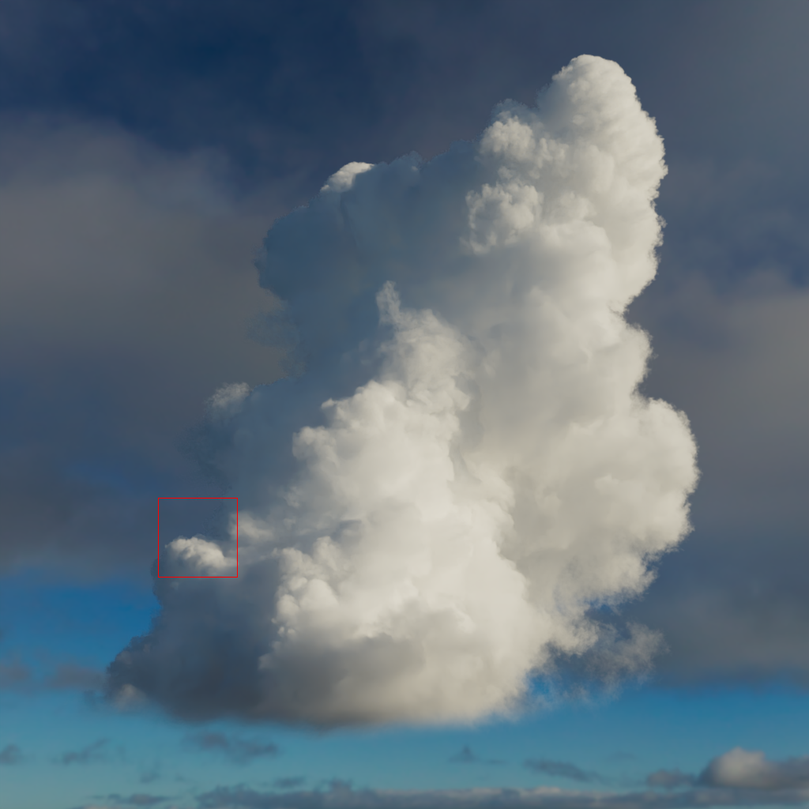
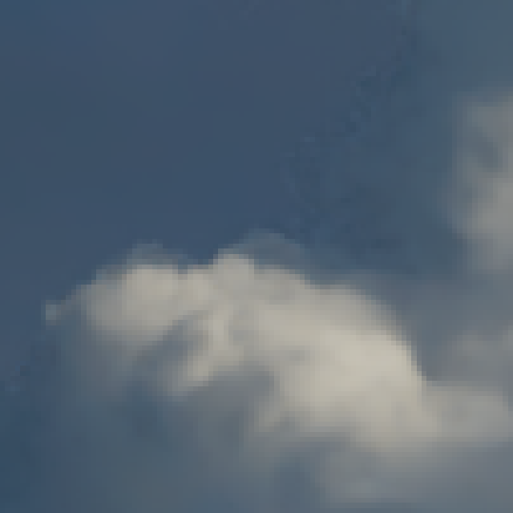
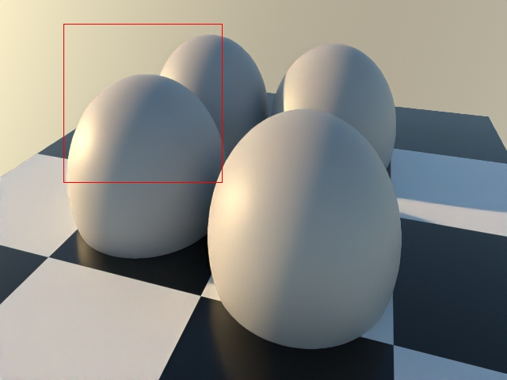
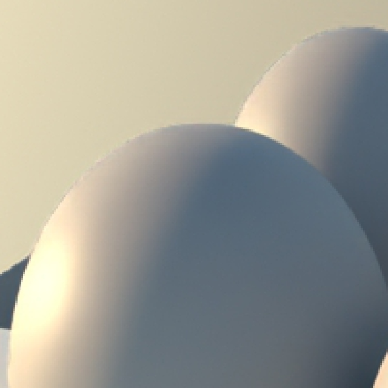
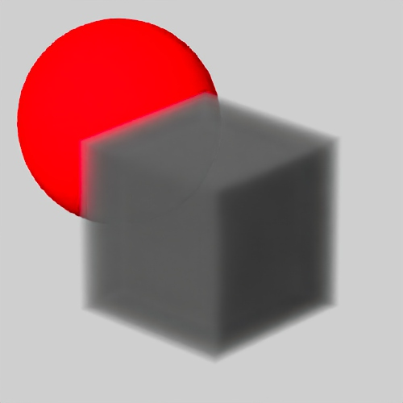
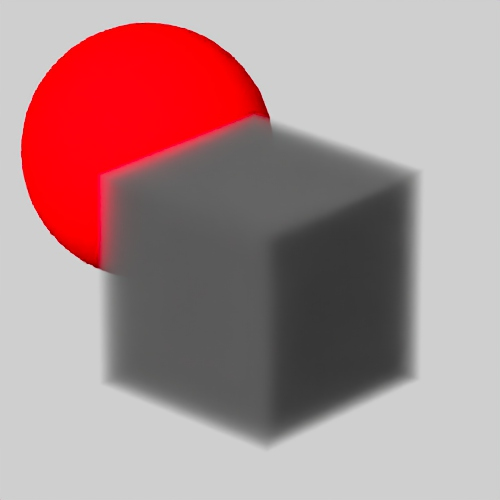
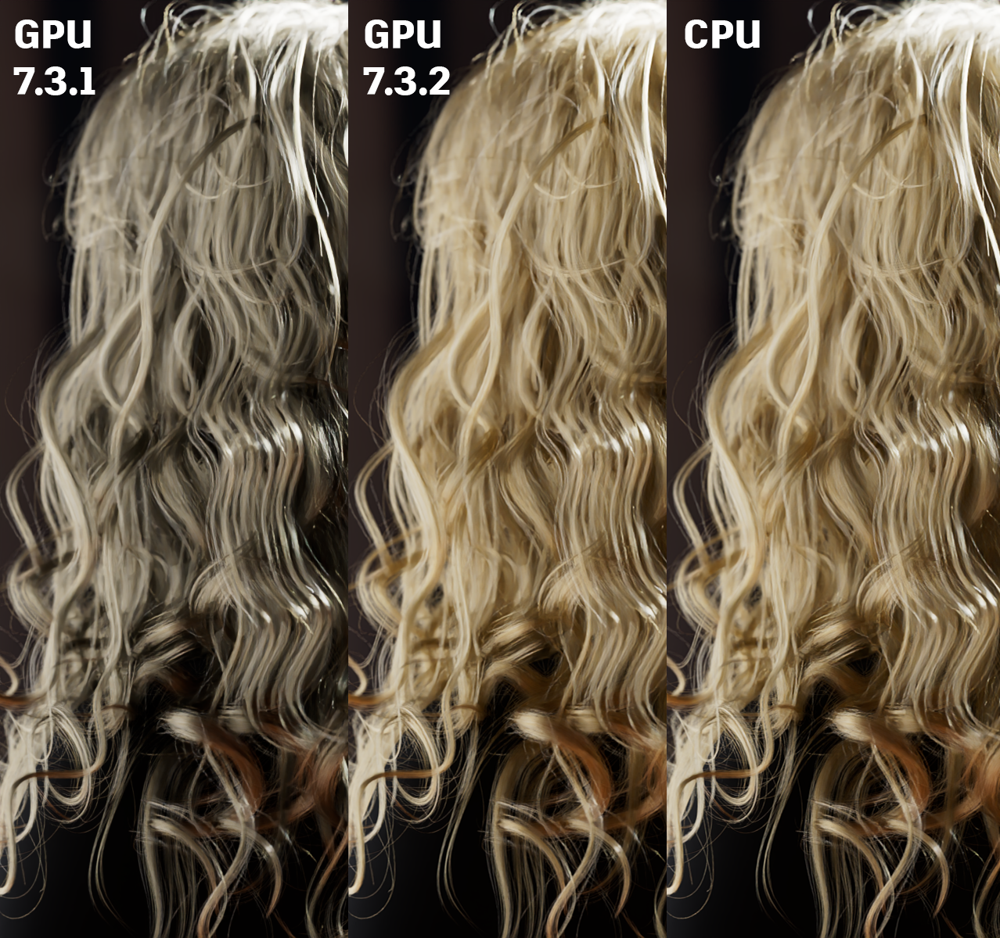

Download Arnold for Maya from your Autodesk Account.
See Download Arnold for more information about downloading MtoA from your Autodesk Account.
Follow these installation instructions.
Enhancements
Toon tone-mapping: You can now drive the hue and saturation of tonemapping in the toon shader. The toon shader has four new parameters that complement the existing value-based tonemapping parameters. The connected shader's U coordinate drives direct light hue and the V coordinate drives saturation, which enables textures like those below to map the toon shader's response to colored lighting (Note: make sure to set the image's wrapping mode to clamp and filter to closest for best results) (ARNOLD-10687). These toon parameters include:
Color palette images -> base_tonemap_hue_saturation
image.offset_u: 0 to 1 (light color is unchanged)
Better volume denoising: Denoising volumes now produces better results. The changes in how volume albedo is computed help the denoiser to keep more details. Ringing artifacts when objects are viewed against the background are also reduced, and a new N_denoise AOV fixes some denoising artifacts visible in low-AA renders. (ARNOLD-14936, ARNOLD-13071)


7.3.1
7.3.2


7.3.1
7.3.2


7.3.1
7.3.2
Many-lights support for light linking: Global light sampling is now applied per group of lights linked to a shape. That can improve rendering performance for scenes with light linking. The ALab scene now renders twice as fast when you use Global Light Sampling. (ARNOLD-14985)
Improved Standard Hair on GPU: The GPU renderer now supports the extra_depth parameter. This enables accurate rendering of blond or bright-colored hair without raising GI_specular_depth.

Improved volume albedo AOV: Volume albedo values are now more physically-based. This improves volume denoising and any LPE AOV using volume albedo is now much more useful for compositing. For backwards compatibility, you can set the new global option legacy_volume_albedo to true. (ARNOLD-13071)
Bake Geometry can now bake to USD Subdivided and displaced geometry can now be baked to USD, ASS, or OBJ. (MTOA-1918)
Improvements to the Arnold RenderView snapshots workflow
Snapshots by default now point to a folder based on the current scene name. You can use a custom folder instead, and this custom location will be saved with the scene and used instead of the default scene folder (MTOA-1923)
Snapshots can be moved to a different folder. When you set a new snapshosts folder, or load a scene with a different snapshot folder, a Move option is displayed asking if you want to move the current snapshots. (MTOA-1932)
A new Enable Snapshots Folder option that can be queried or set via MEL or Python
// Get the value of the Enable Snapshots Folder option
arnoldRenderView -get "Enable Snapshots Folder";
// Result: 1
//
// Set the Enable Snapshots Folder option
arnoldRenderView -opt "Enable Snapshots Folder";
Improved OSL interoperability: The color4, color2, vector4, vector2, and matrix33 are now supported as output types of OSL shaders when connected to Arnold shaders. Additionally, Arnold shaders that output RGBA or Vector2 types can now be directly connected to OSL shader color4 and vector2 input parameters. Those features make it easier to mix Arnold and MaterialX standard library shader nodes. (ARNOLD-1398 ARNOLD-14692)
Update OpenVDB to version 11.0: Arnold now uses the latest OpenVDB library. For the list of changes between OpenVDB version 7.1.1 and version 11.0, see the release notes. (ARNOLD-11217)
Change MtoA Windows installer to MSI MtoA now has a more integrated installer using the Microsoft Installer Framework (MTOA-1816)
USD Enhancements
Cylinder lights - Cylinder lights are saved as UsdLuxCylinderLight primitives - usd#1894
API changes
Geometry baking API: You can now bake subdivided and displaced geometry. You can save the baked geometry either in another universe or you can change the geometry in-place in the same universe. Typically, you would bake geometry by looping over scene nodes with AtNodeIterator. Currently, geometry baking applies to polymesh nodes only.(ARNOLD-2815)
Save usdz files to a usdz_tx folder: Previously when reading a .usdz file, any generated .tx files would be saved to a folder named <usdz_filename>.tmp. The .tmp extension may have led users to remove this folder prematurely, resulting in extra work the next time the usdz was rendered. These files will now be written to and read from a folder name <usdz_filename>.usdz_tx. (ARNOLD-14999)
Improved volume AOV: The volume albedo AOV and LPE scattering event has been improved. For backwards compatibility, you can set the new global option legacy_volume_albedo to true. (ARNOLD-13071)
Bug Fixes
MTOA-1906 - Overlay Imager: <frame> token not updating on frame change until Update Full Scene.
MTOA-1798 - ADPClientService.exe is blocking the MtoA installer.
MTOA-1927 - "onCameraCreated" debug message in script editor
MTOA-1880 - Crash when connecting Arnold dot node to an assigned shader
MTOA-1861 - Crash on Materialx volume node while rendering
MTOA-1233 - Full Paths check box in Export All/Export Selection dialog boxes doesn't work
MTOA-1213 - Loading some tx files, such as those that use multipart subimages as mip-map levels, crash Maya
MTOA-1936 - Loading MtoA removes Attribute Editor menu customisations
ARNOLD-8165 - Crash when curvature, ambient occlusion, or round corners is used in displacement
ARNOLD-14551 - Add log notification when FIS is enabled
ARNOLD-14590 - Very bright lights, such as the sun, are not properly occluded by dense volumes